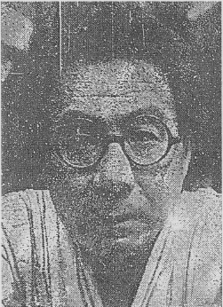

不見転観相学 桜井大路
この写真（次頁の）から観た処では、額、眉、耳と何 れにも非常に強く反家庭的な相が感じられる。特に顔全体の大きな特徴を成している鼻によくない相がある。この種の鼻を持つ人は、金を稼ぎ出す力は持っていても、常に散じてしまう人である。又、大変に短気であり、若くして家を捨ててしまう生え際をしている。
尚、一番強く出ているのは常識的な人間ではない、という点で他人とは絶対に相容れない人であり、誰れにでも好かれる、という人ではないが少数の目上の人には大変に愛される人ではある。
この人は孤独な人であるから、一人で出来る仕事を撰べば、四十台にして一応の名を成すが、四十五、六、七という時期は仕事と金の両面で内面的に悩むときである。五十台の初めは多少伸び悩むが、五十六、七にして大を成す人である。若い時から苦労とか経験とかいう点には遺憾がないから、それが仕事の上に生きてくるのである。額を観ても苦労が身についた人と云える。
この人の四十台までを災いしたものは、その大部分が家庭的問題である。尤も家庭的に種々煩雑な点は一生涯を通じてのものではあるが、四十台以後は非常に勢い盛んな時であるから、それを押し隠してしまうのである。しかし、年と共に環境の寂しさが増すという点は、特に附言しておく。
性格としては他人には大いに良く、義気もあるが、又一面、非常に細かく物を穿鑿する癖もある。所謂、外面がよく内面の悪い人である。言動は派手で勇ましいが、内心では常に細心の注意を怠らない人でもある。
人を大勢使うという人相ではないが、賑やかなことが大好きな人である。
長生きをする吉相もあるが、恋愛をすれば必ず苦労する相をも併せ持っている。
最後に総括すれば、善悪二相が極端に現れ、二十四五、三十二三、三十七八には手痛い苦しみをし、これからも紆余曲折の生涯を辿る人ではあるが、仕事は立派に成しとげ、世間のためになる人物である。しかし孤独であるが故に家庭的ではない。是非一度実物に会ってみたい興味を覚える。
尚、一番強く出ているのは常識的な人間ではない、という点で他人とは絶対に相容れない人であり、誰れにでも好かれる、という人ではないが少数の目上の人には大変に愛される人ではある。
この人は孤独な人であるから、一人で出来る仕事を撰べば、四十台にして一応の名を成すが、四十五、六、七という時期は仕事と金の両面で内面的に悩むときである。五十台の初めは多少伸び悩むが、五十六、七にして大を成す人である。若い時から苦労とか経験とかいう点には遺憾がないから、それが仕事の上に生きてくるのである。額を観ても苦労が身についた人と云える。
この人の四十台までを災いしたものは、その大部分が家庭的問題である。尤も家庭的に種々煩雑な点は一生涯を通じてのものではあるが、四十台以後は非常に勢い盛んな時であるから、それを押し隠してしまうのである。しかし、年と共に環境の寂しさが増すという点は、特に附言しておく。
性格としては他人には大いに良く、義気もあるが、又一面、非常に細かく物を穿鑿する癖もある。所謂、外面がよく内面の悪い人である。言動は派手で勇ましいが、内心では常に細心の注意を怠らない人でもある。
人を大勢使うという人相ではないが、賑やかなことが大好きな人である。
長生きをする吉相もあるが、恋愛をすれば必ず苦労する相をも併せ持っている。
最後に総括すれば、善悪二相が極端に現れ、二十四五、三十二三、三十七八には手痛い苦しみをし、これからも紆余曲折の生涯を辿る人ではあるが、仕事は立派に成しとげ、世間のためになる人物である。しかし孤独であるが故に家庭的ではない。是非一度実物に会ってみたい興味を覚える。
★
私が徹夜の仕事をしてフラフラしている朝方にオール読物の廻し者の写真師が来て、易者用の写真をうつします、という。
写真をうつすに身ダシナミが大切なのは見合写真と相場がきまったわけではない。我々の場合は特に例外なく人目にさらすための写真だから、身ダシナミは云うまでもなく、技をこらしポーズをつくり、大いに衆目をだまさなければならないのだが、そういう心得については欠けることがないのだけども、一度も実行したことがない。写真屋来るというので、顔を洗い、ヒゲをそり、着物をきかえたタメシがないのである。たった一度文藝春秋誌の何とかの百人という写真の時だけ、ハダカで仕事をしていたところ、流れる汗をこらえて着物をきるというムリをした。ムリのおかげでわが生涯にたッた一度のマトモの写真ができたのである。心がけ、というものは日ごろ心得があるだけではダメなものだ。実行しなければ意味をなさんものである。
易者に見せる写真だというから、天性の麗質を強いて現す必要もないが、せめて顔を洗い、目を涼しくして、頭脳メイセキの片リンぐらいのぞかせる心得が必要であったようだ。あいにく徹夜の仕事を終えたところで、アンマの到着を待つところへ、アンマサンの代りに写真屋サンが一足先に到着した次第であるから、アンマの先着者のために顔など洗うわけには参らん。しかし、アンマの方がおくれたために、アンマにもまれつつある写真でなかったのがまだしも取柄であったろう。
それにしても、この写真には、おどろいたな。死刑囚だね。

死刑囚の閑日月としか見えない写真に、良いような、悪いような、良いような、その物ズバリ的なところもある目の肥えた判断を下した桜井さんは相当な手腕家だな。
彼はこの写真の
そして、写真を見せて身の上判断を依頼したのが文藝春秋記者であり、それが読物に用いるためであることまでは分ったが、いかなる内容の読物だか分らないし、写真の主の名も身分も教えてくれないとすると、彼はこの人物の職業身分を自分で考えなければならないし、その点に関して一応の推測が先立つ必要があったと思う。
この写真からみると、これを現に犯罪に関係ありと見たてる。現に盛運の相ではない。雑誌がとりあげる人物だから、ナニガシの人物らしいが、易者が顔を知らない所を見ると、時の人にしても、大物ではない。
現在、こういう相貌の閑日月をしている人物で話題になりそうなのは、モグラ族である。徳田、野坂中尉から下は伍長、上等兵に至るまで近ごろは地下にくぐったから、モグラの一味かも知れん。
しかし、アベコベのモグラもいる。右旋性左旋性というものは万事にあるもので、モグラの運動にも二ツの相異った本能をもつモグラがあるのだ。単行本で盛大に稼ぎつつ敗戦後一貫してモグラの運動をつづけている参謀がいるしその同族同類もいる。
パージ族というのもあるが、パージ族というほど育ちの良いところはないから、とにかくこの閑日月は浪人の風格であることは確かなようで、すると、官庁か大会社で悪いことをしてクビになった奴かなア。しかし、単に時の罪人なら新聞紙上で顔にナジミがあるだろうし、その身の上判断なんてものを雑誌はたぶんとりあげない。すると、目下、浪人、とにかく理由あって、世を忍び、目下、苦労してることはタシカだなア。
技術家的なところもあるが、技術家も原子エネルギーの天才からスパイ、文士に至るまでいやがるし、モグラの技術家は日本ではあんまりきかないが、するとアプレゲールの政治家かも知れないな。するとアシダ・グループとかヤミ成金グループの参謀かも知れん。没落した財産イントクの高利貸、ヤミ社長。目下キンシン中の教祖かなア。それもある。
とにかく、写真の顔だけで純粋に判断することは不可能であろう。職業、身分とか現在の社会的地位というものは、顔だけの写真では分らない。実物を見ればかなり分る。実物を見る代用としては依頼者の身分と用件と依頼ぶりから想像せざるを得ない。
人相、骨相からだけの純粋な判断に先立って一応職業、身分、現在の社会的地位というようなものに当りが必要に相違なく、そのような当りの必要があるということの方が易断の合理性や科学性をも証しているのであろう。顔や手を一目見るだけでズバリというのは、いかにも凄味があるようだが、左程にズバリの先生が一生易者にすぎんとはバカげた話で、現在の依頼者の職業身分に当りがつけば、あとは人相骨相等ににらみ合せて公約数的に身の上、性格等の判断をわりだすのは不可能ではなく、公約数の算定法は相当に合理的でもありうる筈のものであろう。
私は易断には不案内だが、人間を性格的に観察することは文学をする者にとっても甚だ重大なことであるから、観察ぶりも似たようなものだろう。
ただ文士は易断する必要はない。結論をだす必要はないし、ここに二者の相違があるのだが、易者とちがって、文士は結論がだせないのである。
まず文学上の性格判断というものは、性格に先立って、万人は同じもの、同じ可能性をもったもの、というのが常識として潜在しているものである。
性格は、可能性の多少に属しているだけのものだ。可能性の多少は、その人の一生に、必然的に現れてくるものではなくて、環境や偶然に左右され、諸条件に相応するものだ。
犯罪の弁論だの判決というものも、ここまでは文学同様常識であり、その上に成り立っているものであろう。
文学は可能性の探求である、と一言にして云いうるかも知れないが、文学にもいろいろ流儀があって、性格の可能性を探す人もあろうが、むしろ人間の可能性ということの方が大事であり主流と申すべきであろう。
性格の可能性ということならば、それが環境や偶然の諸条件に支配されるにしても、性格に内在する可能性の多少が、諸条件に積極的に作用する力もあって、そのような必然的なもの、既知的のものは、文学上の探求と関係しないものである。医学や法律なぞが、それに応ずる薬とか、療法とか、罪の裁定とか、をもとめる土台となるかも知れぬが、文学は探求でもあるが試みでもあり、薬の量を定める土台にもならないし、それ自体に解決を持たないのが普通である。
平凡人に諸条件がかかった場合――むしろこの諸条件に重きがおかれる。
性格に重点をおけば、可能性の多少ということは、肉体的に云えば、まア病気の多少、病人をさすことに当るかも知れん。
文学の方は平凡人、つまり、普通の健康体がむしばまれて行く可能性、いかなる条件があって、かかる病人となるか、その社会悪というものが考えられ、病人の対策や病気の治療が問題ではなくて、諸条件とか社会悪というものへの反撥や、正義感が、文学の主たる軸をなすもののようだ。したがって、人間自体に関する限り、文学には解決や結論がない。いつまでたっても、常にあらゆる可能性が残っているだけの話なのである。
だから文士は、人間の性格についての心得は当然必要だけれども、性格に主点を定めて人生を見ることが少ないし、その文学活動に於て易断を行うことはないものである。
易断は性格判断でもある。文学と易断はその点ではまるで違ったものなのである。
★
たとえば、反家庭的とか、家を捨てる性格というものは、文学上の問題とはならない。家庭に反せざるを得なかったこと、家をすてざるを得なかった条件が問題となる。必ず家庭に反し、必ず家をすてる人間というものは存在しないのである。
私が若くして家をすてたのは事実だが、反家庭的かどうかは疑わしいし、家をすてる必然性も疑わしい。金をよく散ずることも事実だが、これも性格であるか、思想であるか、にわかに判じがたいところで、私が思想的に蓄財する可能性は少くないのである。また、私の散財が思想的な結論からきていることも云えないことはない。性格と思想が同じものだということはウソである。相反する思想を所有することはできるが、相反する性格はそうはいかない。
同一人が左右両思想のいずれかへ走り易いという性格はあるが、この場合の左右というのは性格に無関係な思想上の左右であるか、蓄財か散財か、家庭的か反家庭的か、ということは性格として相反する左右であるが、思想としては同一人がいずれへ走る可能性もあることで、私がにわかに蓄財家になっても別にフシギはないのであるし、いつでもなれることなのである。あるいは、性格とか思想というよりも、意志の問題かも知れない。私はむかし薬品中毒したが、今はそうではない。中毒者の性格ということも一応考えられるだろうが、実際は意志が左右する問題であって、意志は性格よりも後のものだ。もっとも、意志することも一つの性格だという見方があるかも知れないが、すると意志以前は何と云うべきであろうか。
徳川家康は五十を越し六十ちかくなっても、にわかの大事に会うと、顔色蒼白となり、手の爪をかむクセがあったという。関ヶ原の時、戦闘開始するや、秀秋の裏切りがハッキリするまで形勢全く彼に非で、金吾の奴にはかられたか、と蒼ざめて爪をポリポリかみつづけていたという。
こういうところは今日の医学では小心者の精神病者の性格である。ところが家康という人はにわかの大事に会うとテンドウして蒼ざめたり爪をかむけれども、その逆上コンランを押し鎮めて後には、周到細心、着実無比の策を施し、眼をはたらかせる深謀遠慮、沈着の智将なのである。
そして家康の一生には、その武将としての足跡には、三方ヶ原の敗戦このかた蒼ざめて茫然自失した跡などは見られないが、しかも事件突発の当初に於てはそれが五十すぎても変らない持ち前の性格で、側近の見た偽らぬ家康、彼の平凡な一面だったのである。
氏も素性もない他人の女房にかぎって妾にしたがるところは甚しく好色に見える家康だが、それは外道的、反家庭的のように見えて、彼の一生はそうでもない。わが子の一人二人煮ても焼かれても平気な風もあり、わが子を平気で殺しもしたが、それが反家庭的かと云うと、実は徳川幕府というたッた一軒の家督をまもるためでもある。
要するに、家康という人間の行蹟を見て、そこに彼を語る軸をさがすとすれば、それは彼の性格ではなくて、彼の思想であり、性格の上に意志がはたらき、一ツの思想に形成されて熟慮断行されたものが、家康の行蹟であり、家康という人間であった。
同族会社か株式会社か、天皇制か大統領制か、そんなことも性格ではなく思想的に解決せられることであろう。
人生を性格と見るのは易断の弱点の一ツで、人生をひらくものは性格ではなく、意志であり、思想なのである。性格には正邪はないが、思想には正邪がある。人生の価値を決定するものはその正邪の方で、性格はそれ以前の原始なものと知るべきであろう。
★
常識的でない、というのも問題のあるところ。日本でも私は次第に常識と解され、常識化されているように思うが、よその国へ当てはめてみると、私の常識性はハッキリするように思う。私の方が普通で、日本の他の文士の方が常識的でないように思うのである。
人とは絶対に相容れないとは手きびしいな。そんな人間はいないでしょう。人と相容れ易いという方が、どうかしてるんじゃないかな。人と容れる容れないも、思想的なもの、考えられた生き方ですよ。
たとえば石川淳は私よりも孤独的で、友達もないが、根は私よりも心あたたかく、ヨコシマなところなく、誰にでも愛さるべき人である。彼を愛さぬ人は愛し得べき良さ美しさに理解できないせいもあろうし、彼に匹敵する深い愛情や、人間の交りはそのような深さに於てのみ相許さるべきことを知り得ないせいもあろう。
私は人と相容れないどころか、相容れて困るぐらいかも知れない。そして私は昔から少数の目上の人に愛されたことなんか一度もありませんでしたよ。
しかし、これは桜井さんの目ガネちがいではありますまい。性格や身の上の公約数をさがして行くと、そうなるのが自然で、人生の指針が易断で間に合う人間にはそれで間に合うものであるし、桜井さんの公約数のだし方にはソツがなく、その限りに於て相当合理的で、易者としては一級の見巧者と申せよう。
はじめ記者がこの写真を持参した某易断所は、写真の易はダメだとお叱りを蒙ったそうであるが、おめず臆せず堂々とやってのけた桜井さんは、自信も立派だが、たしかに巧者でもある。
人と絶対に相容れない、とか、少数の目上には深く愛される、というのは易者の方では常套の言い方らしく、それがある種の人々には却ってピンとくるらしい様子がよく分るけれども、その云い方も易断の弱点の一ツであろう。こんな風に云うのは、どうだろう。
「己れを
私は時々こんなことを云って若い人にイヤガラセを云ってやる。
「マジメにやれば誰かが見ていてくれるかも知れないが、能がなければ、マジメなほど救いがねえや。マジメにやれば見ていてくれるというのは、バカ同志の共同戦線かなア。どッちか一ツをハッキリと選んでやりなよ。二ツは一ツにならねえや」
これは易断ではない。酒に酔っぱらッたときの酒の肴たる年若き人物への一場のクンカイの如きもので、したがって甚だ良い気なものであるが、同時に、相手にクンカイをたれているのか、自分にたれているのか、そのへんの区別アイマイモコたる悲哀がこもったところもあるようだ。
かかる一場のクンカイも、これまた人生の公約数的な怪味を帯びているけれども性格よりもいくらか思想性によりかかったところがあって、やや高級な説得力があるらしいが、それにしてもドストエフスキイの小説中に現れるノンダクレのセリフ以上の名言卓説ではない。孔子サマ、ヤソサマの大教訓にヘダタリのあること十五万里。ただし、ドストエフスキイのノンダクレにしても私にしても、自らモグリの言説であることには重々心得があって、決して大教祖を志しているような怪しいコンタンはないのである。
私の四十台までを災いしたものは家庭的問題である、というのは、全然一人ポッチで放浪のみしていた私には全く当らないようであるが、全く当ってもいる。なぜなら全然一人ポッチということも、家庭的問題かも知れんからである。易断は万事かくの如きもので、当っていると思えばみんな当っているし、当らんと思えばみんな当らん。
一人ポッチということは家庭の支えを失っている点では完璧な家庭的問題で、これに災されて四十までメが出なかったというのは、そう思えば、そうなるだろう。もっとも、メが出たときも、同じように一人ポッチであった。
文芸批評家が私の作品や一生を論ずるには、どう云うだろうか。ドストエフスキーの場合には家庭問題ということが彼の作品や生涯を解くカギの一ツとなってるようだが、しかし、それはドストエフスキー自身が手紙や文章の中でそれを言いたてているせいもあるだろう。本人が言いたてたって、一向に本当ではないものである。だから私が家庭問題に煩わされた顔を一度もしなかったり、一度も書かなかったにしても、これまた信ずるに足らずと見たところで、その論者の立場に不可があろうとは思われん。
ただ家庭的に煩雑だというのは当らない。私個人の立場として家庭的に煩雑で、家庭のことまで気にかかるのは時にやりきれんと思うことも確かにあるが、他の人や、他の家庭にくらべて、私の方が煩雑だという比較になると、桜井さんには悪いが、これだけは完全にそうでないようである。しかしながら、主観的に云った場合に、私が家庭を煩雑に見ていることは確かで、特に年とともに環境の淋しさが増すという点は私も同感である。これだけは、それ以外にどうにもならないものを確信せざるを得ません。
桜井さんは、どういう相を根拠にされたのか知りませんが、四十までウダツがあがらず、四十台でともかく名をなす、という点は、その通りでした。
別にアゲ足をとるツモリではありませんが、二十四五、三十二三、三十七八で手痛い苦しみをしたというのは、すこしズレています。すこしズレるというと大体当ってるようだが、実は二三年ずつズレていて、二三年ズレるとこの間隔では最大限にズレたことになってしまう。
六ツ七ツ、十五六、二十一、二十七、三十一、四十四が手痛い出来事があった意味では特筆すべき年で、しかしジリ／＼ときたものについて云えば全半生に通じていると申せましょう。こう申したとて、桜井さんの易をどうこう云うわけではなく、このタイプの人間ならこのようなことが手痛い出来事で、そういう出来事に会うとすれば何歳ぐらいという算出以外にヨリドコロはないと思うが、あいにく私の半生は全然世間並のところがないから当り様がないだけで、桜井さんの手腕の問題ではない。当る方がおかしいのだ。こういうものは、むしろ当らない易の方が、全局的に見て、その人の全貌をつかむ合理性を含んでいると思うのである。
六ツ七ツというのは、私が私の実の母に対して非常な憎悪にかられ、憎み憎まれて、一生の発端をつくッた苦しい幼年期であった。どうやら最近に至って、だんだん気持も澄み、その頃のことを書くことができそうに思われてきた。
十五六というのは、外見無頼傲慢不屈なバカ少年が落第し、放校された荒々しく切ない時であった。
二十七と三十一のバカらしさはすでにバカげた記録を綴っておいたが、これもそのうち静かに書き直す必要があろう。
二十一というのは、神経衰弱になったり、自動車にひかれたりした年。
四十四が精神病院入院の年。
こんな常軌を逸した異例の人間の一生は、公約数から割りだせる筈はないし、そんな異例なところまで易が見破る必要はないものなのである。
むしろ、これらのことが当らなかったのは咎むべきことではなくて、アベコベに、四十までウダツがあがらず、ともかく四十台で名をなしたというのは、人相骨相に根拠があって判明したのですか。もしそうなら教えてもらいたいものだ。しかし思うに、桜井さんは諸般の依頼条件から考えて、写真の主を戦後派と見ての推断ではないかと思う。そして、そのようにして推断し、誤りがなかったということは、彼の易断が相当健全な常識の上に立っていると見ることができ、私はその方を信用するのである。私は神ガカリ的な易断や、邪教的な暗示ぶりをとらないのである。
性格として、外によく、内に悪い、というのは、当っているが、しかし、これは当るのが当然だろう。まア人間の九割ぐらいは、外によく内に悪いのが当然だし、特に頭を使う商売や人間関係の複雑な世界に政策商略的な生き方をしなければならない人間は、外によく、内に悪いのが自然で、内に悪いのが一種の休息と目してよかろう。気を使わずにワガママにふるまえるのは自宅だけで、内に悪いというのは、自分のウチだけは安心して自分のもの自分の世界だという気持の現れで、内に悪い方が親しさのアカシと見た方がよい。
本当に仲がわるくて内にわるいのは、外によく内にわるい、という意味の正当なことではなくて、異例のことだ。内に辛く当るのが親しさの現れ、というのが、日本の家庭の内にわるしということの真相だろうと思う。
日本の家庭の封建的のためでもあるが、女子が経済的に男子に従属せざるを得ないことの必然的なものでもあって、その意味では日本だけのものとは限らない。
女子が経済的に従属するという意味を押しつめると、女房というのも良人にサービスする商売だという一面もあることは確かであろう。亭主の気質をのみこんで、ほかの女ではできない行き届いたサービスをする。それだけのサービスしても、亭主は外によく、内にわるくて、よろこんだ風がなく、いつもブッチョウ面をしていると怒るのも自然だけれども、実は亭主というものはそんな無礼なブッチョウ面をさせてくれる女房に甚だ深く感謝しているものだ。
私はオメカケというものを持たないが、日本の家庭の在り方ではどうしてもオメカケの方が敗北し易いのではないかと思っている。日本婦人のやや己れを空しうして亭主に仕えるという献身性は、女が男に従属するという限りでは最高のサービスで、従属的な夫婦関係では、この上のものもない。
オメカケも経済的に男に従属する点では女房と同じことで、こッちはハッキリ商売であるが、容姿が美しかったり、性愛の技巧にたけていたり、天性のコケットで話術にたけ、男の気をひきたたせ、酒席のとりもちが陽気で、男の
問題は、女房の方に献身が不足で、オメカケに献身がそなわる場合で、これでは女房が負けるのは仕方がない。ところが日本の女大学的女房は、形式上の女房学者が多くて、忠義と献身とをまちがえているのである。
忠義という修身上の言葉、女大学的に説明の行きとどきうる言葉は形式的で、本当に充実した内容がないのが普通であるが、献身というのは情愛の自然に高まり発した内容があって、経済的に女を従属せしめている男にとって、男をハラワタからゆりうごかし、男をみたしうる力は、女の献身にこす何物もあり得ないものである。
天性のコケットがいかに男を陽気にする力をそなえ性愛の技巧にたけていたって、女房に献身があって、自分にそれがなければ、いつかは男が女房の方へ帰るにきまったものだ。つまり男にサービスする商品としての女にとっては、献身が結局最後のそして最高の商品価値をなすものなのである。
男女同権などと称したって、経済的に女が男に従属する限りは、どうにもならない。男女共学も結構、男が女をエスコートする風習の移入も結構。男女の外面の生活の形式がどう変ろうと、経済的に女が男に従属する限りは、結局、男が最後に選ぶ女の美徳は献身ですよ。
同じ職場で働いていて、恋愛時代は経済的に独立し合っていて、男の方が女の方にサービスするような恋愛時代がつづいても、結婚して女が男に経済的に従属したならば、愛情の自然の発展が献身に高まらないと、いつかは男は他の女の献身へ走ってしまう。
女房に献身のある限り、オメカケの容姿の美しさ、若さ、天性の娼婦性、性愛の技巧等が敵に兼ね具わっても怖るるに足らぬが、オメカケに献身があっては、女房もダメである。特に、忠義と献身をとりちがえている女大学の優等生は、理論的にいかにオメカケを撃破する力があっても、実質的にオメカケを撃破することは不可能なのである。
経済的に女房を従属せしめている亭主は、女房の献身に対しては人生唯一の己れの棲家をそこに見出しているもので、本当に己れの城であるという安心が、ワガママ放題のブッチョウ面となって女房に対するのだ。女房の献身が骨身にこたえて安心できるほど、ワガママでブッチョウ面になり易いものだと云うことすらできよう。
男がよその女にサービスするような関係は、心配はいらないものだ。男に経済的に従属する女というものは、美や技巧で長く男をひきとめることはできませんよ。美も技巧もいくらでも目移りし易いものだし、男にサービスさせる要素がある限りは、いずれは崩れるものにきまっている。
外によく、内にわるい、ということは、男が家庭的でないという意味を現してはいない。女房が経済的に男に従属する限りは、むしろ男の家庭へ回帰する正しい感情が内にわるくなるものだと見てよろしいのだ。
まア、そのように女房も商売であるような夫婦関係では、女房が娼婦的で献身的であるのに越したことはない。
だから、家庭的であるか、ないかは、女房との相対的なもので、孤独であるが故に家庭的でないというのは、正しい云い方ではない。人間は孤独なものだ。孤独な人間ほど、常に「家」に回帰したがる郷愁に身を切られるのが自然で、それに対して骨身にこたえるのは女房の献身だということができよう。母にもまさる献身が女房にあるなら、何をか云わんや。私の女房はそのような献身をもっているから、私が家庭的でないことは有り得ません。
浮気っぽい私のことで、浮気は人並以上にやるだろうが、私が私の家へ回帰する道を見失うことは決してあり得ない。私は概ねブッチョウ面で女房に辛く対することはシキリであるし、茶ノミ友だち的な対座で満足し、女房と一しょに家にいて時々声をかけて用を命じる程度の交渉が主で、肉体的な交渉などは忘れがちになっているが、それは私の女房に対する特殊な親愛感や愛情が、すでに女というものを超えたところまで高まっているせいだろうと私は考えている。私はとッくに女房に遺言状すらも渡しているのだ。どの女のためよりも、ただ女房の身を思うのが私の偽らぬ心なのである。それはもう女という観念と質のちごうものだ。そして女房に献身のある限り、私の気質に変ることは有りえない。つまり私は決して私と女房とを平等には見ておらぬ証拠で、女房とは女房という職業婦人であるが、すでにカケガエのない唯一の職業婦人として他の女たちと質のちごう存在になっていることが確かなのである。
孤独な人間は、浮気であるが、本当に女に迷うなどゝいうことはない。そして、惚れることはさめやすく、迷うこともさめやすく、いたわり、いつくしむことだけが長いのである。たとえそのイタワリやイツクシミが逆なブッチョウ面となって現れるにしても、それはそういうワガママをしうるのが自分の本当のウチであるアカシなのである。
言動はハデで勇しいが、内心では常に細心の注意を怠らないというのは、たしかに私の特質であろう。ちょッと異例的に細心メンミツである。しかし、こまかくセンサクする、という癖はどうだろう。あることについては特にそうだが、あることについては全然そうでない。つまり、私は物にコル性質であるが、コルというのは、あることにだけセンサクすることで、反面他のことにはてんでセンサクを怠る意味である。人生万般に万べんなくセンサクするようなコリ屋はないものだ。図抜けて一事にセンサクし、かなり永続するのをコルという。
長生きの吉相があるとは有りがたいが、恋愛すれば必ず苦労する相も併せ持っているとは、いささか手きびしいな。
しかし、そう苦労もしませんよ。恋愛して本当に苦労するのは第一回目の一度だけだね。その時は、はじめてのことで、その道に不案内だからコンランは益々コンランを重ねるし、そのコンランの時間は甚しく長く、私の場合約五ヶ年かかったな。
何度恋愛しても、一時的にコンランし、夜もねむれないほどの苦痛になやむのは、たしかに同じことだけれども、だんだん時間的に短くなり、一ヶ月、一週間、三四日と、ひどくちぢまるものだ。もう、こうなると、恋愛即浮気で、ほとんど、とるに足るものではなくなってしまう。
ただ我身をかえりみて云えることは、いつまでも浮気ッぽい癖だけはどうにもならないだろうと云うことだ。意識的にそうである一面もある。すべては、ひどく、メンドウだ。けれども敢てメンドウを辞さないようなムリな一面もたしかにあるが、それは商売上の慾念や、商売意識からのものだろう。まるで商売熱心にかこつけるようだが、そういう言いわけの意味はミジンもなく、第一が天性浮気ッぽい性、第二が時にひどくメンドウくさくて敢て辞さないようなことがあるのは商売意識のせいもある、というだけのことです。
云いかえれば人生はひどく退屈だし、浮気なんて特に退屈千万で、いわばムリして女にサービスするようなバカらしい空虚な時間であるが、何が一番ハリアイがあるかというと、とにかく商売だけだ、ということだけはハッキリ云えます。
★
死刑囚の閑日月と云うような妙テコリンの写真から、とにかく、こういう判断を下した桜井さんは、相当健康で合理的な判断力がある方で、神がかりや邪教的な要素が少い文化易者と見立てることができよう。
文春記者の語るところによると（今きいたのだが）桜井さんは本人に会って声をきくと判断し易いと云って、写真だけではうまく出来ない理由としたそうだ。
声をきいてみたい、というのは、たしかにその通りだろうと思う。私も声や声によって現される言葉には、その人間が現在位置している場所、つまり、職業とか身分地位というようなものを綜合的によく具現しているに相違ないからである。声にはその人間の確信も信念もこもるものだし、その声を分類し、声の裏にかくされたものや、言葉の意味が彼の心からどの程度の軽重さで発せられたかも分るものだし、それは私たちだって、桜井さんと同じように相手の声を読むものです。
若い青年の議論が、どの程度彼の身についたものかは、声で一番よく分るものです。どの程度の信念か、それも分る。まア、私たちには私たちだけの必要があってのことだから、声を判断に利用するのはその程度にすぎないけれども、職業によって利用するにはたしかに声は大切で、易断の方では私が声を利用するのと別な角度や方向があるに相違ないことは想像ができる。
声をききたいという桜井さんは、益々易断の合理主義者と云うべきかも知れない。銀座にふさわしい易者で、文化人に好評を博す素地ある人であろう。
しかし、その人の一生を本当にうごかすものは性格ではなくて、環境や偶然でもあるし、又、さらに、意志や思想であるが、それも偶然や環境等の諸条件の支配をまぬがれることはできない。
易断に何が一番必要かと云えば、過去をよく当てるというのは単に易断の前座的なものにすぎないもので、さりとて、その未来を当てるための占いは健全で合理的な易者のつつしむところと致されねばなりますまい。
目下沈んだり隠れたりしている彼の長所をかきたて、彼のより良くより強い信念とか、逞しい意志などをひきだすエニシとなり、彼のより良い人生のために職業上の技術と善意とを役立ててやることではないでしょうか。
あなたのような合理的で健全な易者は未来を占うことの愚かしさを知り、人々のよりよい未来のために正しく諸条件を判断してやり勇気を与えてやるために職業上の技術をつくしてやるべきでしょう。
その人の意志と諸条件への正しい判断によって、未来はいくらでも変るものです。そうではないでしょうか。とにかくあなたは健全な易者ですよ。